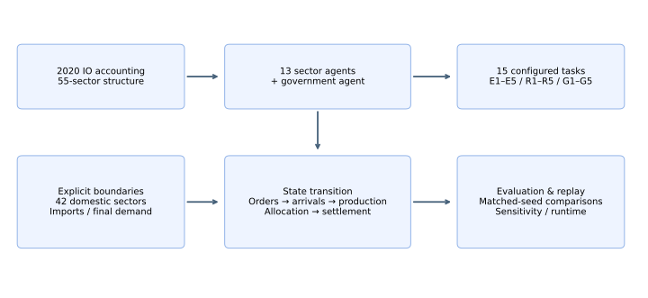
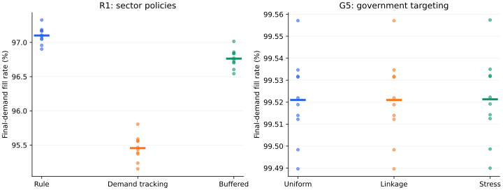

Input–output constrained multi-agent testbed
产业策略如何穿过
投入依赖与产能瓶颈？
IC-EconGym 将集成电路相关部门与政府放入共同核算边界，比较给定冲击和预算下的产业政策与供应链交付。可复现 Python 环境，配套任务回放与中文论文。
13 + 1产业部门与政府决策主体
15赋能、风险、治理任务
3核算一致的进口分配假设
共同核算，可比较行动
2020 年投入产出数据形成 55 部门结构。13 个部门参与决策，其他 42 个国内部门、进口和最终需求保留为显式边界。订单、到货、生产和配给逐期执行；政府六类支出受到总预算约束。

能力何时转成交付
有效 AI、预测、投资、供给选择及研发。记录约束是否绑定，检验状态改善与产出改善是否一致。
局部决策如何传导
需求冲击、组织摩擦、共同误判、拥堵及交付约束。比较相同外生需求下的最终履约。
预算应投向何处
部门靶向、能力建设、协同执行、认证和多工具组合。配对情景保持财政资源可比。
已运行的策略比较
R1 和 G5 各 390 条轨迹，覆盖 13 个情景、3 种策略和 10 个匹配种子。散点表示设定冲击扰动，结果属于条件仿真。最终需求履约单独计量，避免将策略生成的内部订单变化混入服务能力判断。

任务目录
E1 · AI有效生产率AI吸收能力如何改变同等采用投入的产出回报？
E2 · AI预测与供应链协同降低个体预测误差是否同时降低库存和短缺？
E3 · AI与研发效率AI与研发共同投入能否加快技术状态积累？
E4 · AI与供应商匹配较高搜索精度如何改变同类供给通道的拥堵？
E5 · AI需求与产业结构下游需求增长如何经部门网络传导至产出与扩产？
R1 · 需求扩张与产能周期扩产时滞如何改变需求冲击后的短缺和价格路径？
R2 · AI扩散与承接错配AI变化负荷超过下游吸收能力时会否提高边压力？
R3 · 共同预测误判相关预测误差是否放大订单与短缺波动？
R4 · 算法采购与供给集中提高搜索精度会否使同类供应通道拥堵？
R5 · AI异质性与市场势力效率差异和采购集中如何共同影响加价与产出？
G1 · AI补贴配置固定预算下按何种部门权重配置AI支持更有效？
G2 · AI与实体能力组合政策AI与产能、研发及认证补贴的组合能否缓解瓶颈？
G3 · 数字契约与可核验协同平台核验与契约激励如何改变协同采用及资源配置？
G4 · 库存认证与修复同预算下库存、资格和边修复对供给冲击有何差异？
G5 · 多目标政策组合组合治理是否优于同预算的单项政策？
运行与证据边界
python -m pip install -r requirements_ic.txt python validate_extension.py python -m scripts_ic.run_all_tasks --seeds 1,2,3 --arms v1
本页与演示页回放预计算结果。动态参数为情景设定；三个供给通道不是观测企业；206 家企业候选网络尚未进入部门核算。平台当前未训练 RL 或 LLM 策略，尚无独立同口径外部验证。
发布组织参考 EconGym 与 WonderEcon。